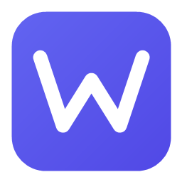

Высокопроизводительный нативный движок виджетов рабочего стола для Windows 10 и 11 на платформе .NET 8. Работает с аппаратным ускорением DirectX, закрепляется на уровне обоев рабочего стола (слой WorkerW — не сворачивается по нажатию Win + D), потребляет 0% CPU в фоне, поддерживает безопасные подписанные пакеты виджетов (.chw) с верификацией RSA-4096 и включает 12 готовых нативных виджетов из коробки.
Виджеты внедряются напрямую в нативный слой обоев Windows через Win32 API SetParent. В отличие от стандартных плавающих утилит, виджеты ChattyWidgets не перекрывают рабочие окна и не сворачиваются при нажатии сочетания Win + D («Свернуть все окна») или кнопки «Показать рабочий стол».
Графический конвейер на базе WPF и DirectX обеспечивает плавные 60 fps анимации только в момент взаимодействия, полностью замораживая лишние отрисовки в фоновом режиме. Расход оперативной памяти составляет всего ~15–25 МБ на экземпляр, что делает движок идеальным как для мощных рабочих станций, так и для автономных ноутбуков.
Виджеты упаковываются в изолированные архивы .chw, содержащие манифест, XAML-разметку или веб-код и ресурсы. Движок проверяет цифровую подпись каждого пакета с использованием асимметричного шифрования RSA-4096: только доверенные виджеты получают статус «✦ Официальный», предотвращая запуск вредоносного кода.
Сохраняйте и переключайте полноценные конфигурации рабочего стола в один клик. Создавайте специализированные пресеты под разные сценарии: «Рабочий мониторинг» (CPU, RAM, GPU, To-Do), «Отдых» (медиаплеер, погода, фото-рамка) или «Минимализм» (часы и криптотрекер).
Режим сквозного клика (WS_EX_TRANSPARENT) позволяет кликать сквозь виджет прямо на лежащие под ним иконки рабочего стола. Умное магнитное прилипание (Snap) с шагом от 5 до 40 пикселей автоматически выравнивает виджеты относительно границ монитора и соседних панелей.
Полная локализация на русский и английский языки (RU / EN) с моментальным переключением без перезапуска программы. Поддержка глубокой темной и элегантной светлой тем оформления в стиле нативного Fluent Design.
| Виджет | Категория | Описание и возможности |
|---|---|---|
| Системный монитор | Hardware | Загрузка CPU, использование RAM, свободное место на SSD/HDD в реальном времени с круговыми диаграммами. |
| GPU Монитор | Hardware | Мониторинг видеокарт NVIDIA, AMD и Intel: температура чипа, тактовая частота, занятая VRAM и процент утилизации. |
| Медиаплеер | Media | Управление Windows Media (Spotify, Яндекс.Музыка, браузер), анимация вращающегося винила и бегущая строка названия (Marquee). |
| Погода | Information | Прогноз погоды на 7 дней по данным Open-Meteo без необходимости ввода платных API-ключей, почасовой график и влажность. |
| Криптотрекер | Finance | Котировки Bitcoin, Ethereum, Solana, TON и других монет в реальном времени с графиками 24h динамики и выбором валюты (USD/RUB/EUR). |
| Заметки & Стикеры | Productivity | Быстрые стикеры для заметок и списков задач прямо на рабочем столе с мгновенным автосохранением и цветной маркировкой. |
| Pomodoro-таймер | Productivity | Классический таймер концентрации (25 минут работы / 5 минут отдыха) со счетчиком завершенных циклов и деликатными звуками. |
| Часы и дата | Time | Элегантные минималистичные цифровые и стрелочные аналоговые циферблаты с секундомером и мировым временем. |
| Док-панель (App Dock) | Launcher | Панель быстрого запуска избранных программ, игр, веб-сайтов и системных папок с поддержкой Drag-and-Drop. |
| Календарь | Time | Компактная сетка текущего месяца с подсветкой сегодняшнего дня, выходных и быстрым переключением по месяцам. |
| Фото-рамка | Personalization | Слайдшоу из выбранной папки с фотографиями или артами, настраиваемым интервалом смены кадров и рамками. |
| RSS-ридер | News | Лента свежих новостей из любых RSS/Atom-источников с автообновлением и быстрым переходом к чтению статьи. |
| Сочетание клавиш | Действие |
|---|---|
| Win + Alt + W | Скрыть или показать все активные виджеты на рабочем столе |
| Win + Alt + P | Режим «Peek» — временно поднять все виджеты поверх всех открытых окон приложений |
| Win + Alt + H | Открыть главное окно управления (ChattyWidgets Hub) |
| ПКМ по виджету | Контекстное меню: закрепление, сквозной клик, выбор слоя, уровень прозрачности и настройки |
| Shift + Перетаскивание | Свободное перемещение с временным отключением прилипания к сетке (Snap) |
Архитектура ChattyWidgets построена на высокопроизводительном рантайме .NET 8. Каждый активный виджет представляет собой изолированное окно WPF со специализированными стилями Win32 (WS_EX_TOOLWINDOW, WS_EX_NOACTIVATE, WS_EX_TRANSPARENT). Модульная система пакетов .chw изолирует ресурсы виджетов, а криптографический сервис верифицирует RSA-4096 подписи. Для веб-виджетов задействован встроенный движок WebView2 с аппаратным рендерингом.